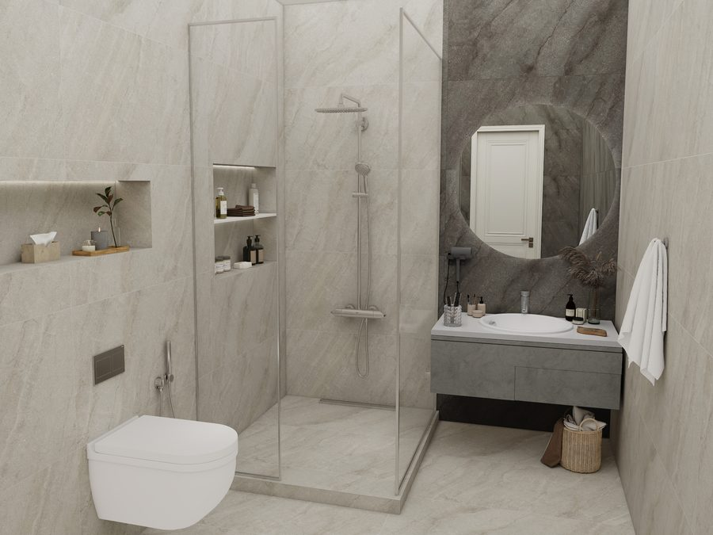
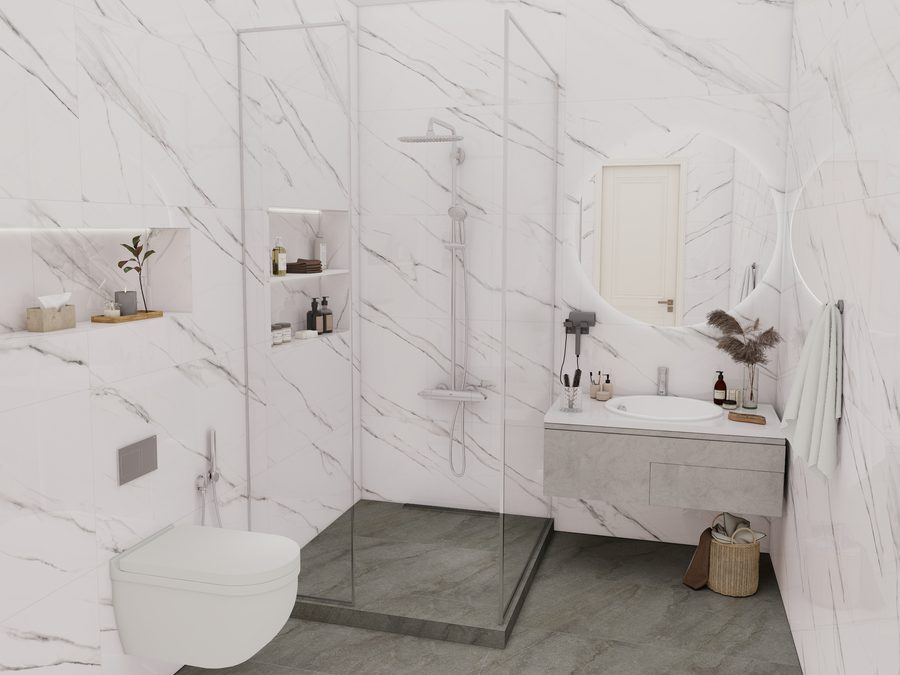
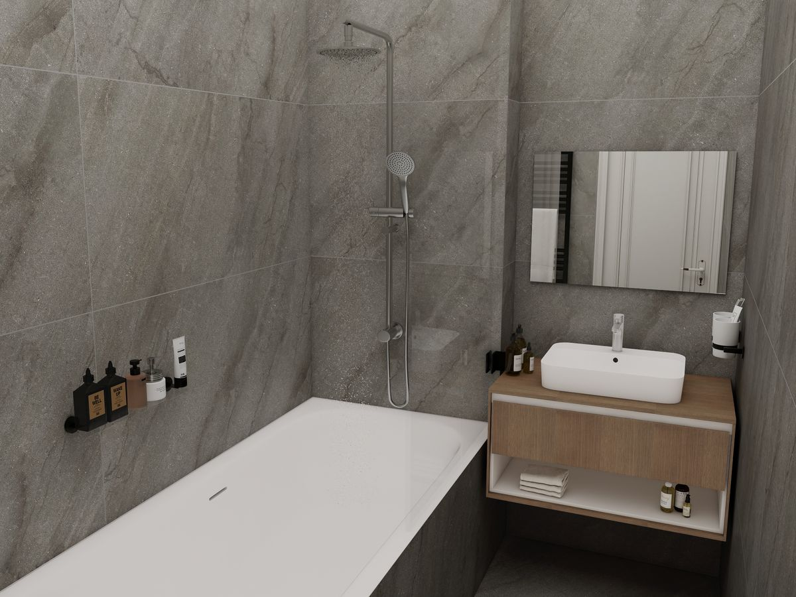
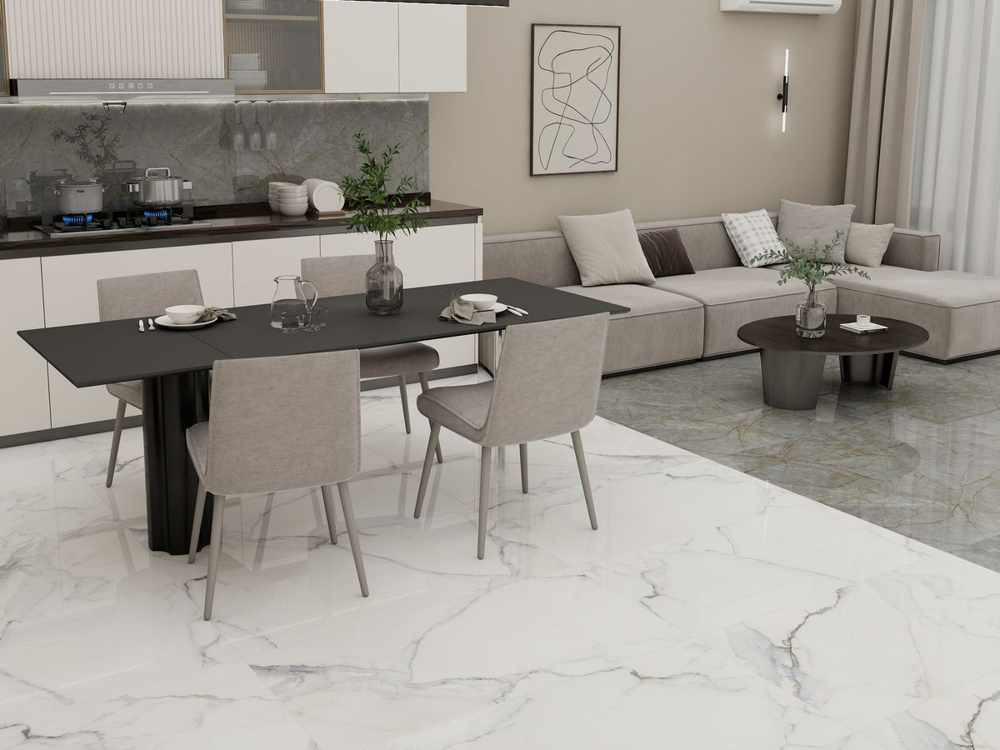
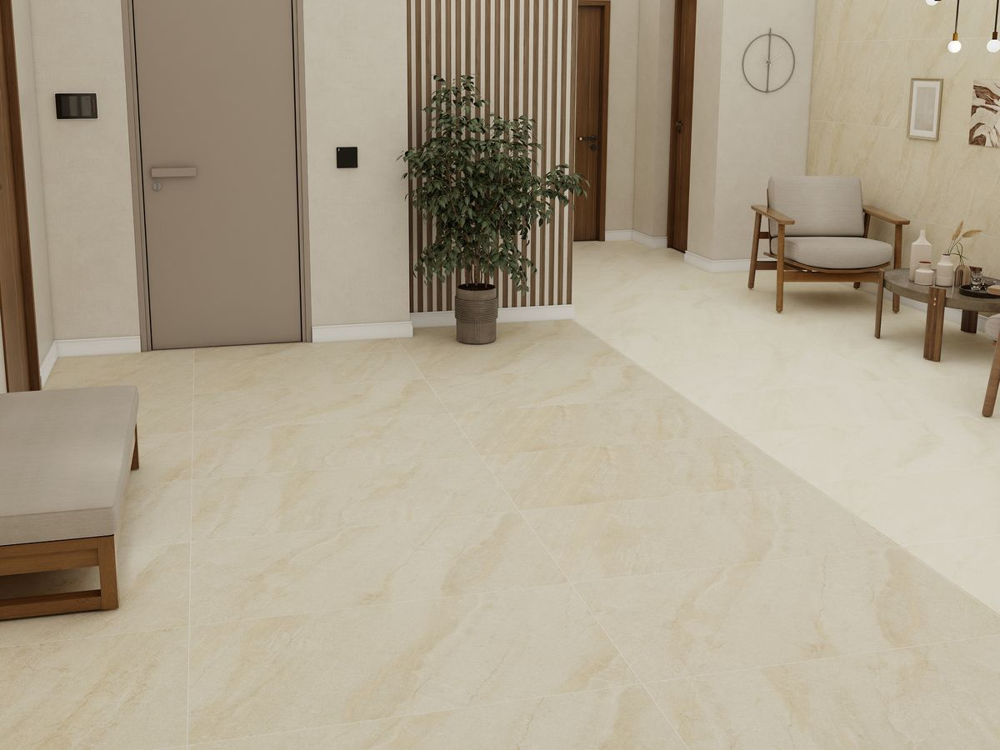

Продавец открывает фотографии производителей, каталоги и переписки.
- Разные интерьеры
- Разные ракурсы
- Разное освещение
- Сложно сравнить именно плитку
Выберите готовую сцену, меняйте плитку на стенах и полу и сразу показывайте клиенту несколько вариантов.
На сайтах, в каталогах и презентациях каждая коллекция показана в своём интерьере: другой свет, ракурс, мебель и масштаб. Поэтому клиент сравнивает не только саму плитку, но и совершенно разные изображения.
Продавец открывает фотографии производителей, каталоги и переписки.


Коллекция A Коллекция BВсе варианты можно посмотреть в одной и той же сцене. Так клиенту проще увидеть разницу между коллекциями и выбрать подходящий вариант.
Все интерьерные сцены подготовлены заранее, поэтому не нужно ждать отдельной визуализации.
Откройте подходящую ванную, кухню, гостиную или другую готовую сцену
Укажите стену, пол или отдельную зону, которую хотите изменить
Найдите коллекцию в каталоге и примените её к выбранной поверхности
Переключайтесь между коллекциями, не меняя сам интерьер
Скачайте изображение и отправьте его клиенту
Сервис дополняет образцы, каталоги и фотографии. Продавец может не только показать плитку отдельно, но и сразу продемонстрировать несколько вариантов в одинаковом интерьере.
Клиенту проще сравнить коллекции, а салон получает дополнительный визуальный инструмент для консультации.
Сервис работает одинаково на каждом компьютере и не требует специальных программ.
Продавцам не нужно самостоятельно искать подходящие интерьеры и фотографии. Они выбирают готовую сцену, коллекцию и показывают результат клиенту.
Как будет выглядеть тёмная плитка? Что лучше смотрится на полу? Подойдёт ли эта коллекция к другой?
Вместо долгих объяснений можно открыть одну сцену и последовательно показать клиенту несколько вариантов.
После консультации готовое изображение можно сохранить и отправить ему.
Клиент видит не две совершенно разные фотографии из каталогов, а один интерьер, в котором меняется плитка.
Так проще заметить разницу между цветами, форматами и коллекциями и сохранить понравившийся вариант для дальнейшего обсуждения.
За несколько минут показываем весь процесс: выбор интерьерной сцены, замена плитки на отдельных поверхностях, сравнение коллекций и сохранение готового изображения.
Получаете доступ к готовым интерьерным сценам и каталогу плитки.
Сервис открывается прямо в браузере. Его можно использовать на компьютере продавца во время разговора с клиентом или для дистанционной консультации.
ПротестироватьОформите тестовый доступ и самостоятельно пройдите весь процесс — от выбора сцены до сохранения изображения
Откройте подходящий интерьер, выберите нужные поверхности и сравните несколько коллекций прямо во время консультации
Если сервис подходит для работы салона, подключите доступ на месяц или сразу на год
Не нашли нужную плитку в каталоге — отправьте заявку. Мы постепенно добавляем востребованные коллекции и производителей
Добавьте свои коллекции в каталог «СравниПлитку».
Продавцы салонов смогут использовать их во время консультаций и показывать вашу плитку в тех же интерьерных сценах, что и другие варианты.
Это дополнительный способ представить коллекцию не отдельной фотографией, а непосредственно в интерьере.
Разместить коллекцииВыберите позиции, которые хотите добавить в сервис. Для начала достаточно нескольких основных или новых коллекций
Мы подготовим плитку для интерьерных сцен, чтобы вы могли оценить, как коллекции выглядят внутри сервиса
После согласования коллекции добавляются в общий каталог. Также часть поставщиков может попадать в сервис через голосование салонов
Салоны смогут находить плитку в каталоге и применять её в интерьерных сценах во время работы с клиентами. Подготовленные изображения можно также использовать в собственных материалах в рамках условий сервиса
«СравниПлитку» создан командой Vilray Studio, которая специализируется на визуальном контенте для керамической плитки и строительных материалов.
Мы сами создаём интерьерные сцены сервиса и подготавливаем коллекции для корректного отображения в них.

Стены, экран ванны и пол размечены по отдельности: коллекцию можно применить к любой зоне

Пол и фартук меняются отдельно друг от друга, мебель и свет остаются прежними

Крупный формат в общей зоне — сцена для холлов, прихожих и коридоров
Поэтому развитие визуализатора не зависит от сторонней библиотеки готовых интерьеров: новые сцены и возможности мы можем создавать внутри своей команды.

Много лет мы работаем с керамической плиткой, создаём визуализации, сайты и цифровые сервисы для производителей и поставщиков. Постоянно сталкиваемся с одной и той же проблемой: у продавца много хороших фотографий, но сравнить две коллекции между собой по ним сложно.
На одной фотографии светлая ванная, на другой — тёмная кухня. Разный свет, мебель, ракурс и масштаб. Так появилась идея «СравниПлитку»: оставить интерьер неизменным и менять только плитку.
Сервис создаётся и развивается командой Vilray Studio. Если в каталоге не хватает нужной коллекции или есть предложение по развитию сервиса — можно написать нам напрямую.
Короткое руководство о том, как понятнее показывать плитку во время консультации: как сравнивать варианты, какие изображения сохранять клиенту и как использовать визуальные материалы после встречи.
Получить руководство можно в Telegram, WhatsApp или по электронной почте.
Практические примеры
Без длинной теории
Можно прочитать за 10 минут
Начать можно с недорогого тестового доступа и проверить сервис непосредственно в работе.
Вместо 24 000 ₽ при помесячной оплате.
Нет.
Сервис специально устроен проще. Вы выбираете уже подготовленный интерьер и меняете плитку на размеченных поверхностях.
Благодаря этому результат появляется сразу и не нужно ждать, пока визуализатор построит отдельный проект.
На текущем этапе — нет.
Главная идея сервиса заключается именно в сравнении разных коллекций в одинаковых заранее подготовленных интерьерах.
Сейчас коллекции подготавливает наша команда.
Это позволяет контролировать качество отображения и не заставлять продавца самостоятельно настраивать изображения и материалы.
Если нужной коллекции нет, её можно запросить.
Нет.
Сервис работает через обычный браузер на компьютере.
Нет.
Работа состоит из нескольких простых действий: выбрать интерьер, поверхность и плитку, сравнить варианты и сохранить результат.
На старте доступно несколько готовых сцен для разных помещений.
Каталог будет постепенно расширяться.
Да.
Мы будем добавлять коллекции самостоятельно, по заявкам пользователей, через сотрудничество с поставщиками и по результатам голосования салонов.
Да.
Менеджер интернет-магазина может собрать несколько вариантов и отправить изображения клиенту в переписке.
Да, если задача — быстро показать несколько вариантов плитки в готовом интерьере.
Для полноценного проекта конкретного помещения сервис не предназначен.
Для салонов предусмотрен тестовый доступ за 100 ₽.
Для поставщиков возможен отдельный тест размещения коллекций.
Оставьте заявку поставщика.
Мы обсудим коллекции, подготовим их для сервиса и согласуем условия размещения.
Помимо платного размещения, пользователи сервиса смогут голосовать за производителей, которых им не хватает.
По результатам голосования отдельные бренды будут добавляться в каталог.
Да.
Vilray Studio может создать отдельную версию визуализатора под конкретного производителя или поставщика: со своим оформлением, ассортиментом и размещением на собственном сайте.
Это отдельная услуга.
В тестовом режиме изображения могут содержать обозначение сервиса.
В платной подписке готовое изображение для клиента можно сохранять без водяного знака.
Напишите в Telegram, WhatsApp или на электронную почту.
По рабочим вопросам отвечаем в течение рабочего дня.
Откройте готовую интерьерную сцену, выберите несколько коллекций и посмотрите, насколько проще сравнивать их, когда интерьер остаётся одинаковым.